對人來說是舒服的好天氣，腳下卻可能很燙。
天氣預報數字
走路時的溫度
散步日和會看到藏在氣溫背後的東西：路面的熱度、濕度、風和紫外線。把這些彙總成一句「現在出門沒問題嗎？」，每天早上告訴你。
今天的散步指數
綜合氣溫、濕度、陽光、雨、風和路面溫度，用 0～100 告訴你今天適不適合散步。還附帶每小時的指數和「推薦的散步時間」。早上開啟看一眼，今天的安排就定了。
-
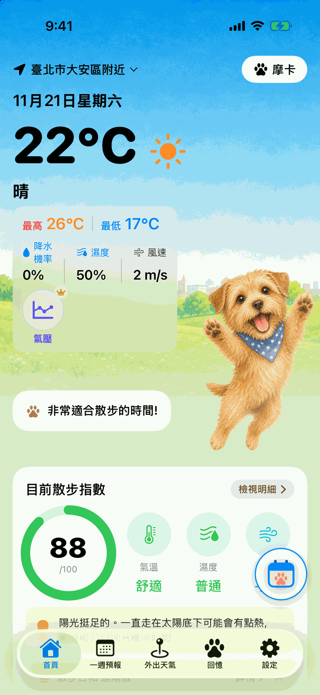
首頁的指數和狗狗的一句話 -
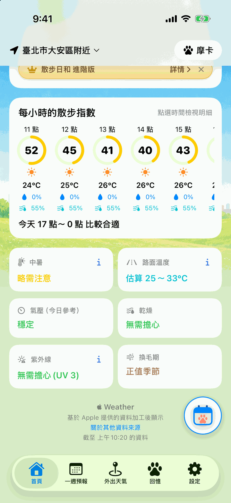
每小時的指數和各項指標卡片
為什麼是這個分數，全都給你看
分成炎熱、路面、雨、寒冷、風、紫外線、乾燥 7 個要素，隨時檢視分數明細。判斷的依據和出處也都放在 App 裡，你可以自己確認，不必只聽我們說。
-
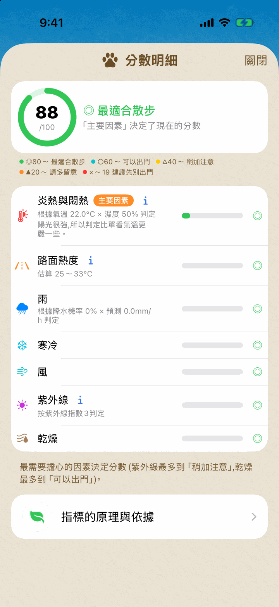
最適合散步那天的明細 -
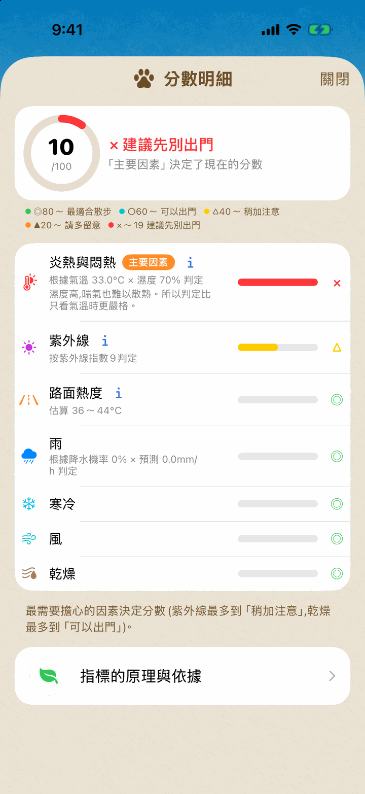
10 分那天的明細，主要因素標為紅色
路面的熱度和中暑風險
根據太陽高度和雲、雨的情況估算柏油路面的熱度，提示可能燙傷肉墊的時段。中暑風險根據氣溫、濕度與陽光的組合分 4 個等級判斷(等級名稱沿用日本環境省的暑熱指數)，短鼻犬種、幼犬和老齡犬會判斷得更謹慎。
-
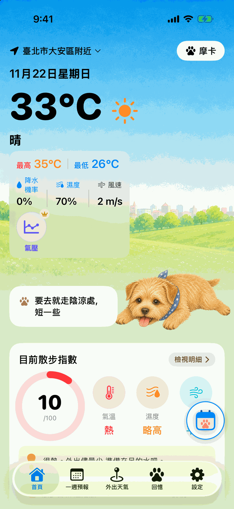
酷暑天的首頁 -
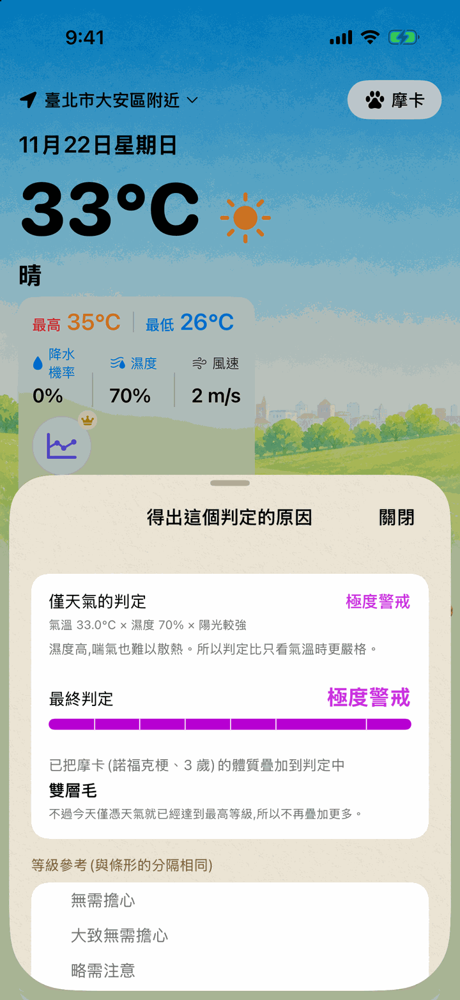
中暑判定的原因 -
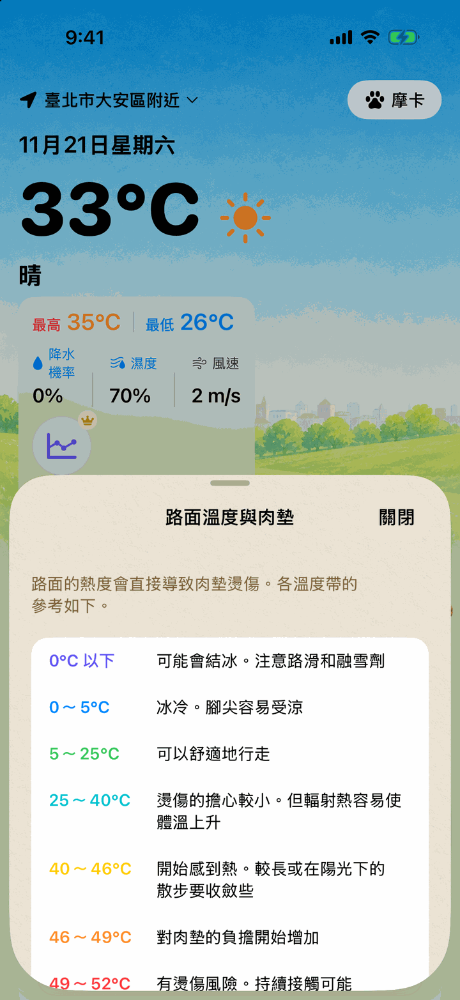
路面溫度與肉墊，按溫度段說明
未來一週，一目瞭然
未來 7 天的最高、最低氣溫、降水機率和風一目瞭然，可以提前安排散步和外出。把狗狗樂園或旅行目的地登記為地點，也能檢視那裡的狗狗視角天氣。
-
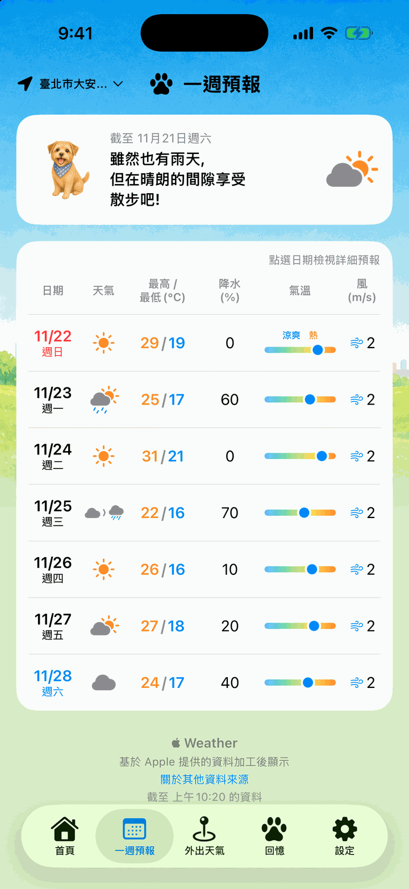
一週預報 -
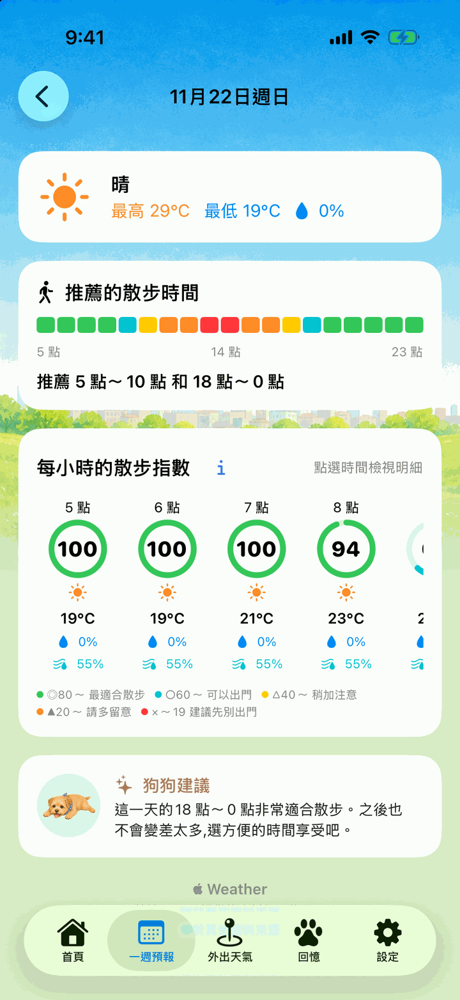
點開某一天，檢視推薦的散步時間和每小時指數 -
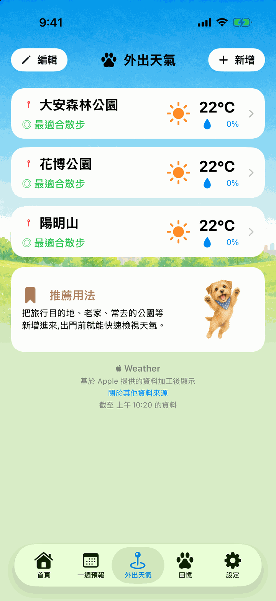
登記的地點一起檢視
貼合你家的狗狗
登記犬種、年齡和體型後，所有判斷都會隨之調整。支援 156 個犬種，多隻飼養也可以全部登記。
-
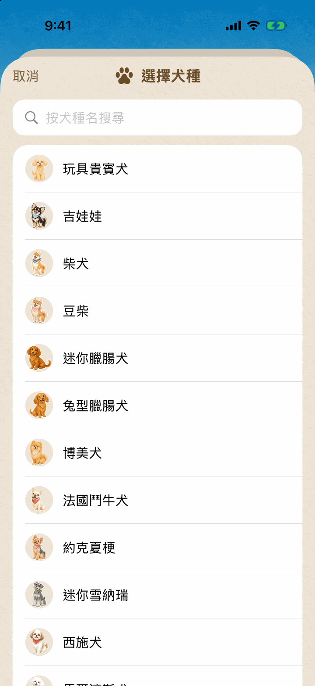
從 156 個犬種中選擇 -
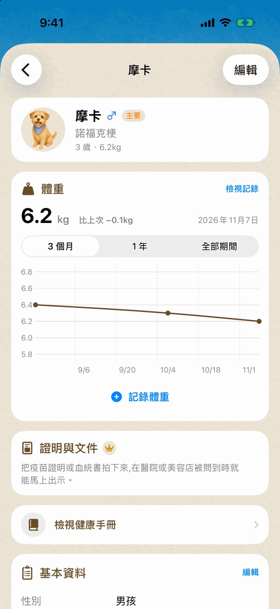
體重記錄和基本資料 -
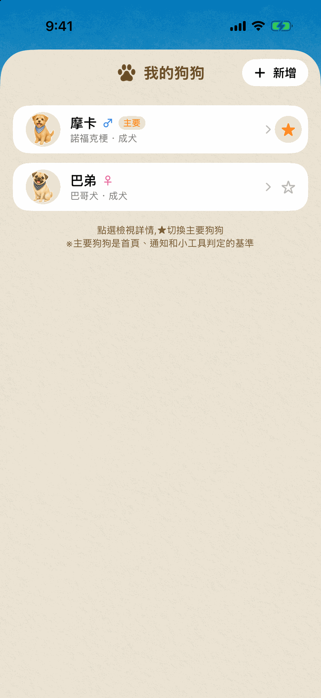
多隻狗狗，各有各的判斷
同樣的天氣，每隻狗狗的答案都不一樣。
短鼻子的狗狗不容易散熱。貼近地面的小型犬，會直接受到路面的熱氣。厚厚的雙層毛和怕冷的短毛，舒服的一天也完全不同。散步日和會把這些差別都算進去。
散步日和 進階版
基本功能保持免費。想要多一點幫助時，進階版會加上這 6 項。
-
家人共享
全家人一起，把狗狗的記錄合而為一
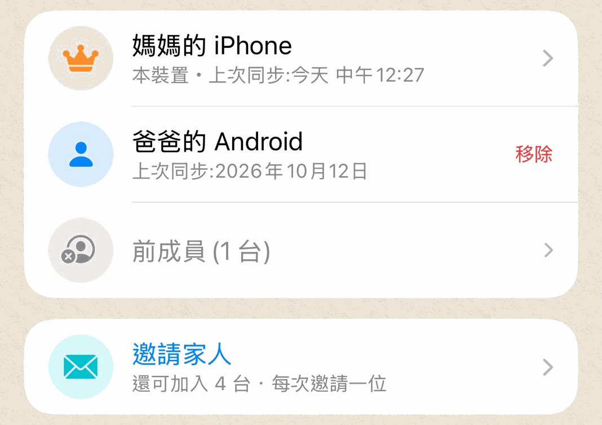
體重、照護記錄和回憶地圖可與家人的裝置同步。只要傳送邀請碼，iPhone 和 Android 之間也能共享。只需 1 台裝置訂閱，受邀家人(最多 5 台裝置)免費加入，還能使用行事曆、回憶地圖和毛色選擇。
-
毛色選擇
讓吉祥物換上狗狗的毛色
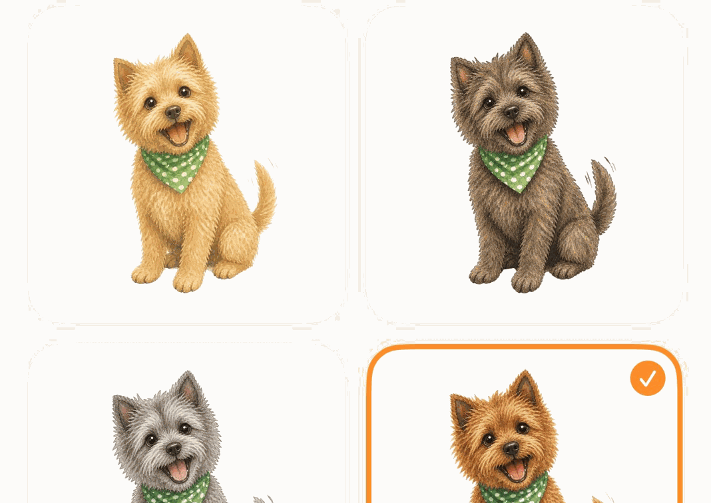
可以從各犬種準備好的毛色中，選出接近狗狗的顏色。首頁和小工具都會變成所選毛色，參與家人共享的家人畫面上也會顯示同樣的毛色。毛色或耳朵形狀和狗狗不一樣時，還可以提出請求。
-
行事曆
自家狗狗的行程，隨心記進行事曆
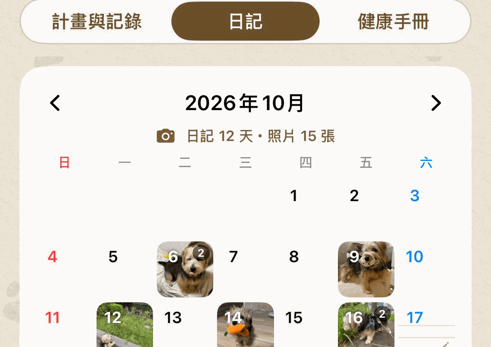
美容、就診、心絲蟲預防等，自由新增狗狗需要的安排，並用照片和備註記錄下來。疫苗和驅蟲的安排，不訂閱也能使用。
-
回憶地圖
把散步的回憶，連照片一起留在地圖上
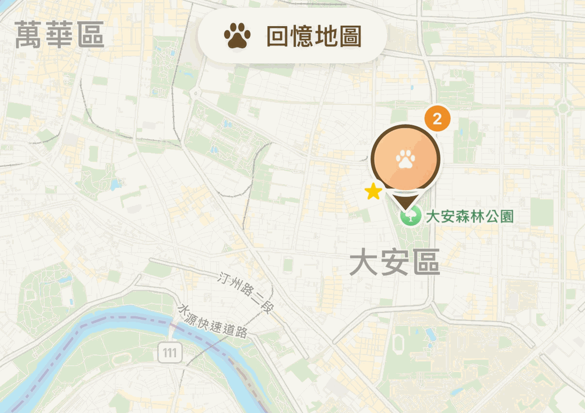
在一起走過的地方留下照片和一句話。圖釘越多，和狗狗的回憶就越會變成一張地圖。免費也能試用 3 筆。
-
氣壓圖表
氣壓的變化，用圖表看到 3 天後
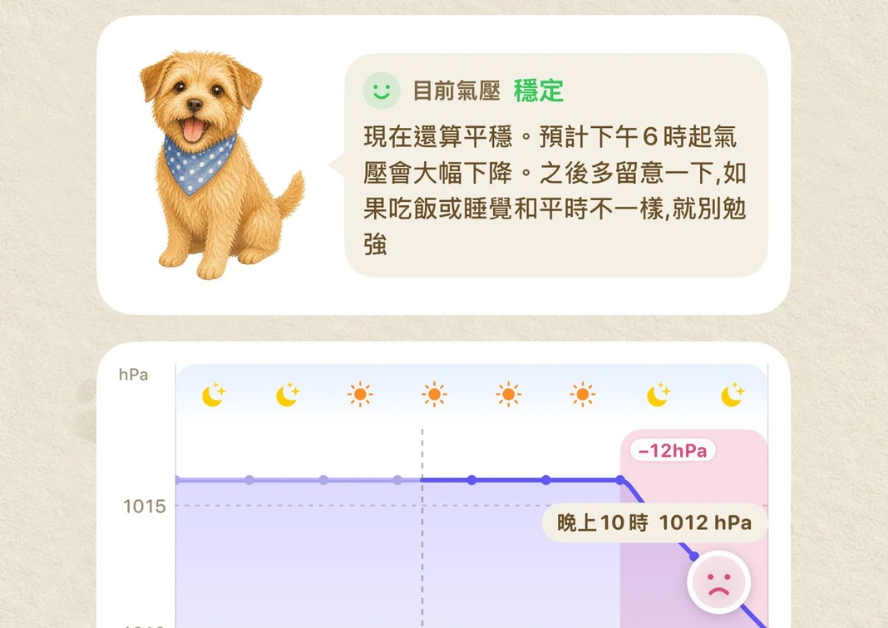
可以用逐小時的折線檢視今天、明天、後天的氣壓走勢。下降的時段會標上顏色，還能看到「21時起下降」這樣的變化時間點。免費版也能在首頁的卡片上看到目前氣壓的狀態(3 個等級)。
-
每日背景
10 張照片和各種狗狗，每天輪流出現在首頁
免費版一直顯示同一張照片。訂閱後，「今天是哪隻狗狗呢？」會成為每天早上的小期待。
台灣每月 NT$60價格因國家或地區而異，購買前會顯示。iOS 版和 Android 版都能訂閱。
僅在開始共享的裝置訂閱進階版期間，家人才能使用行事曆、回憶地圖和毛色選擇。在日本國內，進階版還包括即時提醒，以及可看到 15 小時後的降雨預測和雷電雷達。每日背景中出現的是已有插畫的犬種。可選毛色的數量因犬種而異。付款和取消的條件，請見《基於日本特定商業交易法的標示》(日語)。
可以放心使用
- 沒有廣告
- 基本功能免費，進階版是可選的
- 不需要註冊帳號
- 狗狗的資訊和登記的地點都儲存在你的手機裡(使用家人共享或即時提醒時除外。詳見隱私權政策)
- 位置資訊只用於取得天氣
- 即使不允許使用位置資訊，登記地點後也能使用全部功能
- 每個指標的依據和出處，都在 App 裡公開
常見問題
不允許使用位置資訊也能用嗎？
可以。在首頁的地點選單中登記地點後，全部功能都能使用。
顯示的路面溫度是實測值嗎？
不是。那是根據太陽高度與雲量估算的參考值。出門前請一併做「5 秒檢查」：把手放在地面上停留 5 秒。
在日本以外也能用嗎？
可以。除了雨雲雷達、即時提醒、氣象警報和實測的目前氣溫以外，所有功能在任何地方都能使用。這幾項使用日本氣象廳的資料，僅覆蓋日本國內的地點。
一直用免費版可以嗎？
可以。散步指數、中暑與路面溫度的判定、一週預報等基本功能都可免費使用。照護行事曆中疫苗、驅蟲等計畫也可免費使用。散步日和 進階版是在此之上增加功能的可選方案。
散步日和 進階版在 Android 版也能用嗎？
可以。iOS 版與 Android 版都能訂閱。基本功能在兩個平台上也都可免費使用。
家人共享需要全家人都訂閱嗎？
不需要。只需開始家人共享的那 1 台裝置訂閱散步日和 進階版即可。使用邀請碼加入的家人(最多 5 台裝置)可免費加入，iPhone 和 Android 之間也能共享。